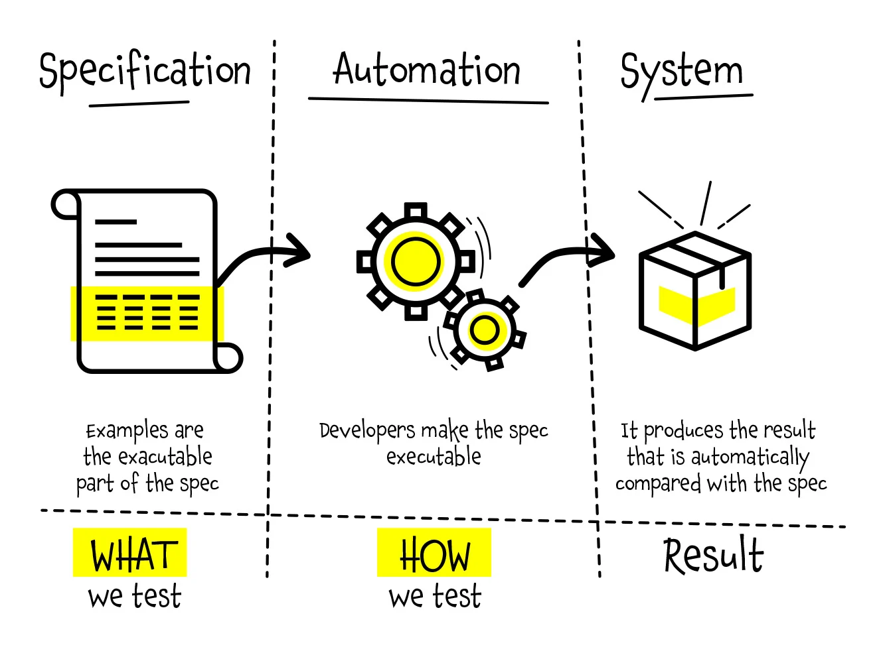

Specification by Example

Näidiste järgi spetsifikatsioon (SBE) on koostööpõhine lähenemine tarkvaratoodete nõuete ja funktsionaalsete testide määratlemiseks. See tugineb nõuete tabamiseks ja illustreerimiseks abstraktsete väidete asemel realistlike näidete kasutamisele. SBE-d kasutatakse tavaliselt agiilsetes tarkvaraarendusmeetodites, eriti käitumispõhises arenduses (BDD).
See lähenemisviis on eriti tõhus nõuete ja testide haldamisel suuremahulistes projektides, millel on märkimisväärne valdkond ja organisatsiooniline keerukus. SBE-d nimetatakse ka näitepõhiseks arenduseks, käivitatavateks nõueteks, vastuvõtutestipõhiseks arenduseks (ATDD või A-TDD), paindlikuks vastuvõtutestimiseks või testipõhisteks nõueteks (TDR).
Eelised:
- Selge Arusaamine Nõuetest: Spetsifikatsiooni Näitel põhinev lähenemine annab selge ja konkreetse arusaamise nõuetest läbi teostatavate näidete. See aitab tagada, et kõik osalised omavad ühist arusaamist sellest, mida tuleb arendada.
- Suhtluse Parandamine: Näidete kasutamine nõuete kirjeldamisel parandab suhtlust osapoolte vahel, sealhulgas äriliste kasutajate, arendajate ja testimise inimeste vahel. See vähendab arusaamatuste riski ning tagab, et kõik on samal leheküljel.
- Varajane Nõuete Kontrollimine: Teostatavad näited toimivad valideerimiskriteeriumitena rakendatud funktsionaalsusele. See võimaldab nõuete varajast kontrollimist, tagades, et tarkvara vastab algsetele ärivajadustele.
Puudused:
- Algse Aja ja Vaeva Investeerimine: Teostatavate näidete loomine ja nende hooldamine nõuab algset aja- ja vaeva investeeringut. See võib olla väljakutseks eriti kiire tempo arenduskeskkonnas, kus on surve kiireks tarnimiseks.
- Vastupanu Muutustele: Spetsifikatsiooni Näitel põhineva lähenemise kasutuselevõtt võib nõuda organisatsioonis kultuurilist muutust, kuna see rõhutab koostööd ja iteratiivset arendust. Mõned meeskonnaliikmed võivad olla muutuste suhtes vastupidised või võivad leida keeruliseks kohanemise selle uue tööviisiga.
- Näidete Komplekssus: Tõhusate ja kõikehõlmavate näidete kirjutamine võib olla keeruline, eriti keerukate või mitmetähenduslike nõuete puhul. Tagamaks, et näited hõlmavad kõiki võimalikke stsenaariume ja piire, on vaja hoolikat kaalumist ja osaliste vahelist koostööd.
- Testimise Üleemphasiseerimine: Kuigi automatiseeritud testimine on Spetsifikatsiooni Näitel põhinevas lähenemises oluline aspekt, on oht üleemphasiseerida testimist teiste tegevuste, nagu disaini ja uurimise, arvelt. On oluline leida tasakaal testimise ja teiste arendustegevuste vahel.
- Hoolduse Lisakulu: Tarkvara arendamisel tuleb teostatavaid näiteid vastavalt muudatustele nõuetes või funktsionaalsuses hooldada ja ajakohastada. See võib kaasa tuua hoolduse lisakulu, eriti kui näiteid ei hooldata ega dokumenteerita korralikult.